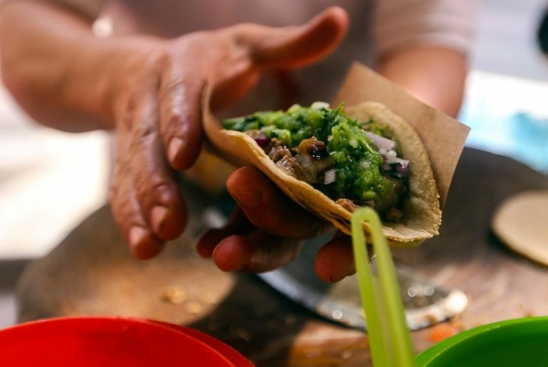

EL FUNDADOR
SUS INICIOS
"Para TAQUERIA EL GUERO", es muy importante que conozcas como empezamos y cuales son nuestras Metas y objetivos que dia a dia
trabajamos por alcanzarlos".

Carmen de la cruz, nuestro fundador, llego de Tabasco, Mexico con
la meta de servir tacos frescos y deliciosos a todas horas. Igual como
tenia en casa.Pero cuando llego a villahermosa Tabasco en 1975,todos los
restaurantes cerraban pronto o su comida estaba congelada o mal hecha.
Un problema muy grande.Estas en tu casa, no importa la hora. Nuestro equipo
con mas 30 años de experiencia ha servido miles de tacos siempre frescos y
a mano. Visita uno de nuestros locales a todas horas y prueba nuestros sabores
auténticos con nuestra salsas famosas. Siempre estamos para ayudarte.